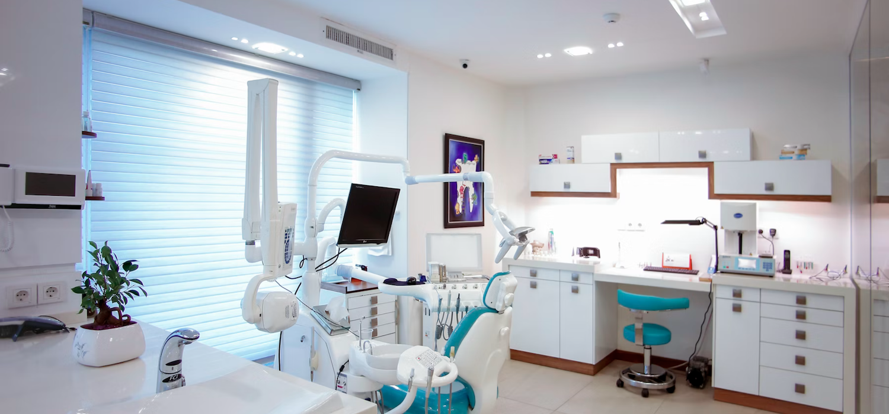

Kezelés landing
Szájsebészet - biztonságos, tervezett beavatkozások
A végleges szöveg helye: rövid leírás arról, milyen esetekkel foglalkozik a rendelő és hogyan zajlik a betegút.

Ár: 85 000 Ft-tól
Kezelés landing
A végleges szöveg helye: rövid leírás arról, milyen esetekkel foglalkozik a rendelő és hogyan zajlik a betegút.

Ár: 85 000 Ft-tól
Képalkotó diagnosztikára épülő terv, lépésenként átbeszélt döntésekkel.
Modern protokollok és tájékoztatás a komfortosabb élményért.
Kontroll és regenerációs javaslatok a biztonságos gyógyuláshoz.
Rendelői környezet, eszközpark és orvosi csapatfotók. Előtte-utána képeket csak jogtisztán és hozzájárulással érdemes feltenni.
Ez a landing készen áll értékesítési célra; a kliensnek szöveg és saját képek véglegesítése szükséges.